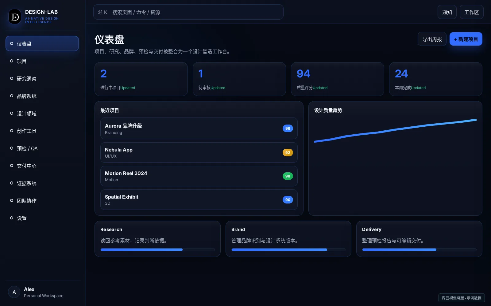
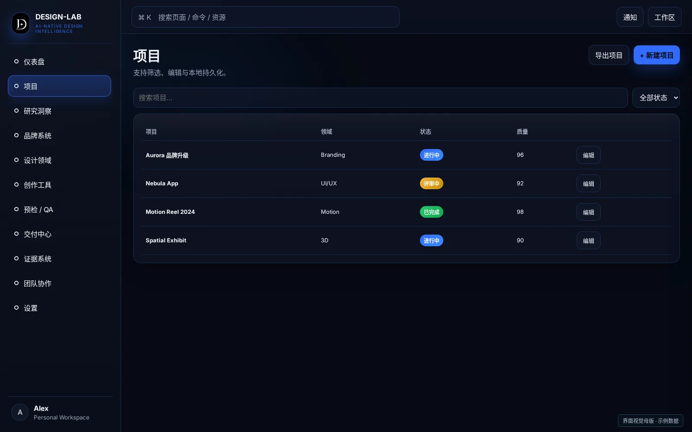
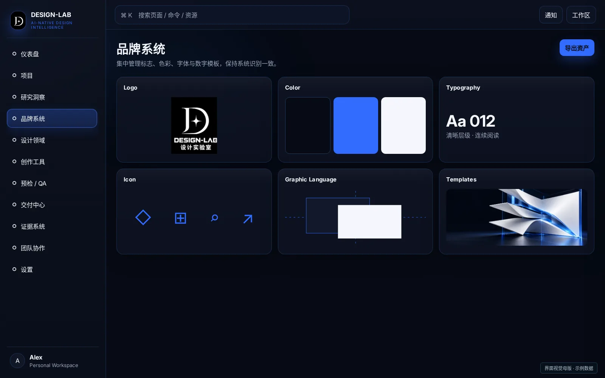
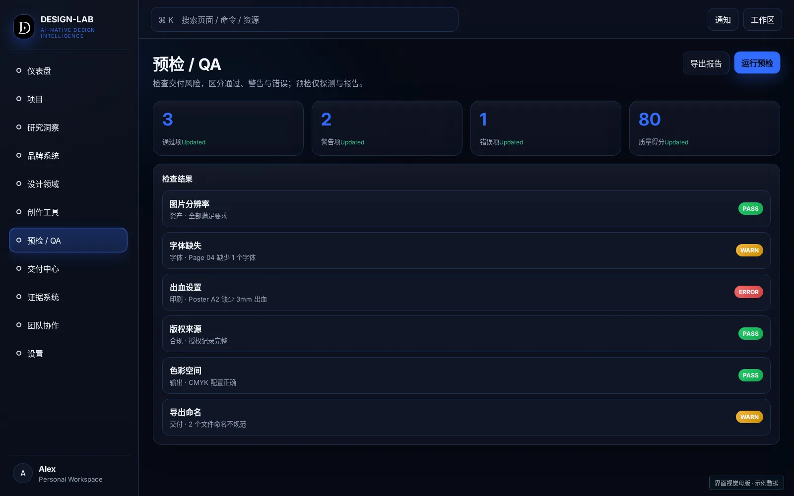
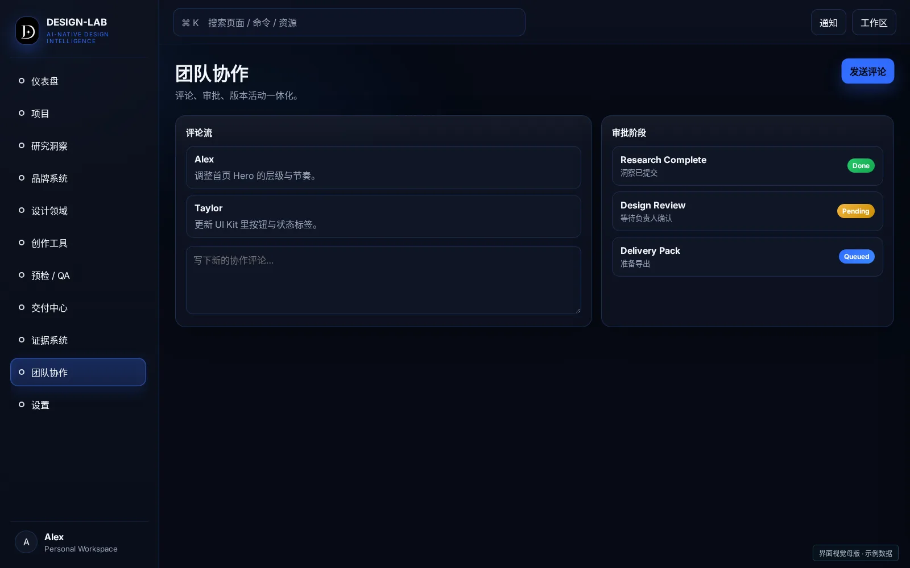
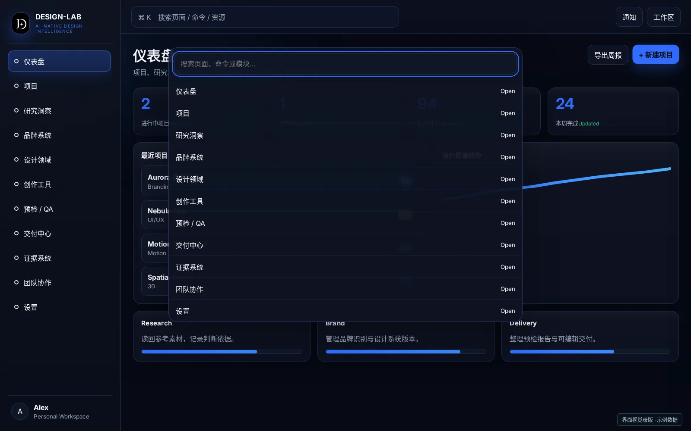
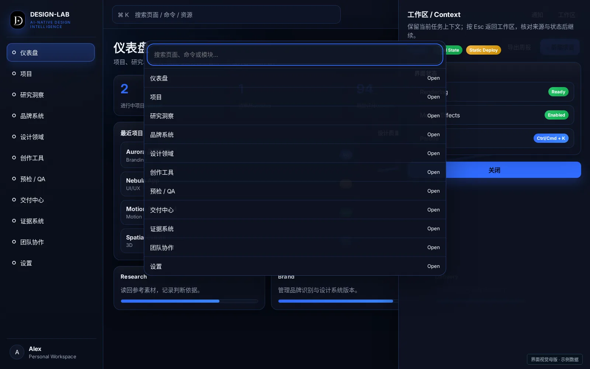
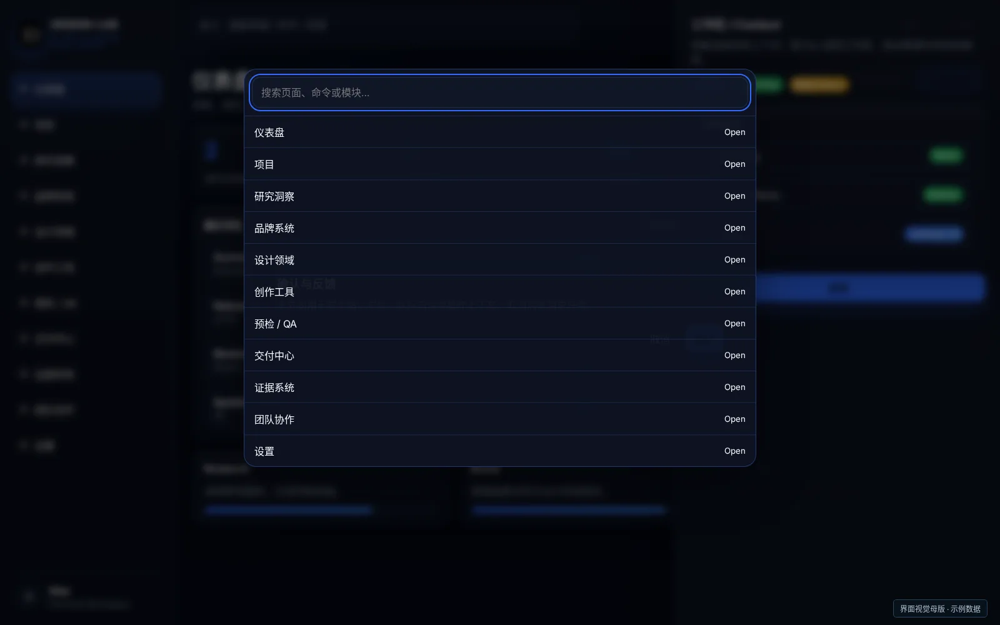
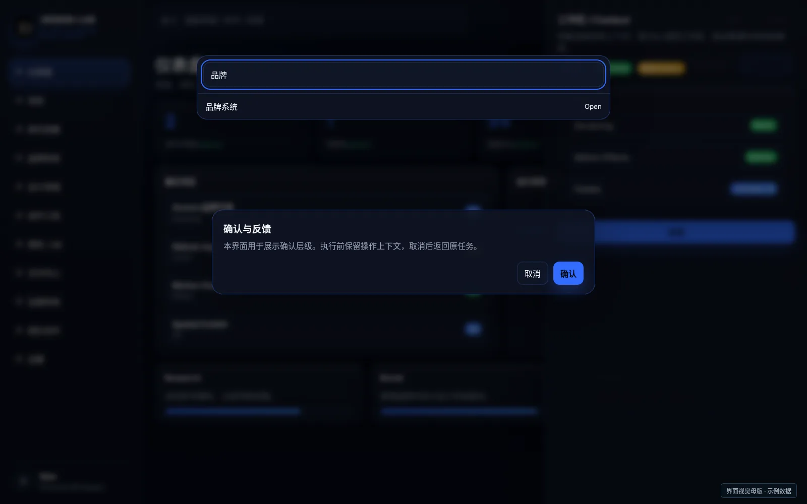

PERSONAL PROJECT / 2026 / ONGOINGDESIGN-LAB
设计实验室 / AI-NATIVE DESIGN INTELLIGENCE
让设计，留下判断。
AI 原生、平台中立的设计能力系统：把参考、方法、领域能力、预检与证据组织成可验证、可回滚的设计闭环。
BRAND · PRODUCT · EXPERIENCE
VI / UI / UXDigital-firstCase Study 2026
设计能力系统 · 质量与交付
DT ALEX STUDIOS
01 / PRODUCT CONTEXT
从真实的工作问题出发。
在参考、生成、排版、改稿与导出之间反复切换时，工具之间的上下文容易断开；做到第七版，判断依据也常常不再清楚。我希望让每次设计决策、版本变化与交付检查都有迹可循。
每一次选择，都有理由；每一次交付，都有依据。
01 / CHALLENGE
参考进入项目后，判断依据没有被持续记录。
02 / CHALLENGE
版本反复修改，选择理由与差异难以回溯。
03 / CHALLENGE
字体、色值与交付问题往往在最后才暴露。
DESIGN PRINCIPLE判断可回溯
参考、方向与设计系统保留连续版本。
DESIGN PRINCIPLE宿主原生
通过工具适配组织能力，保留已有软件与画布。
DESIGN PRINCIPLE交付前检查
预检先探测与报告，问题在交付前被明确呈现。
02 / VISUAL IDENTITY
把产品性格，变成识别。
沿用已经确认的标志与字标，把身份延伸到界面、网站与数字传播。
DESIGN-LAB
D 与四角星形成设计实验室的识别核心。黑灰、白与电蓝建立克制的系统界面；创意作品可以有自己的色彩，系统操作层保持稳定的品牌秩序。
独立符号 / 留白示意 · 正式字形与轮廓沿用原资产
03 / COLOR SYSTEM
颜色承担明确的职责。
色号来自最终版 UI 的真实 CSS，并与组件 Design Tokens 对照。
#060A14
#316CFF
#4BAFFF
#F5F7FC
背景 / 阅读 / 操作 / 反馈，各自建立层级。共享交互方法，保留独立品牌皮肤。
清晰的操作焦点，克制的光效反馈。
品牌主色控制关键操作与选择状态；警告和错误色保留自己的语义，不替代品牌识别。
04 / TYPOGRAPHY
让信息，读起来有秩序。
Research / Decide / Deliver
让设计，留下判断。
清晰层级 · 连续阅读 · 克制表达
Inter / UI LatinAa Bb Cc 0123456789
Noto Sans CJK SC / 中文回退标题、正文、标注，分层组织
Existing Brand Wordmark正式字标沿用原资产，不用 UI 字体替代
05 / GRAPHIC LANGUAGE
同一种逻辑，延伸到不同画面。
06 / PRODUCT INTERFACE
把复杂能力，放进清晰界面。
沿用最终版 UI 的色彩、布局与交互母版，让产品身份在真实信息密度中成立。
DESIGN-LAB · PRODUCT INTERFACE

DESIGN-LAB · PRODUCT INTERFACE

任务与内容组织
DESIGN-LAB · PRODUCT INTERFACE

核心工作区域
07 / INFORMATION ARCHITECTURE
入口、工作区、上下文。
把信息结构拆成三层，让用户知道自己在哪里、正在做什么、依据是什么。
NAVIGATION / 入口
项目01
研究洞察02
品牌系统03
设计领域04
创作工具05
预检 / QA06
WORK AREA / 主任务
Brief 与方向01
设计系统与版本02
预检与交付03
CONTEXT / 判断依据
参考与判断依据01
工具适配状态02
证据等级 E0–E503
入口组织任务类型；主工作区承载连续操作；上下文区域提供依据与状态，不打断当前任务。此图说明本案例的体验结构。
08 / CORE JOURNEY
每一步，都有可理解的反馈。
STEP 01
读回参考
导入后核对预览
确认素材已被实际读取
STEP 02
确定方向
Brief → Direction
记录每次方案判断
STEP 03
建立系统
Direction → DesignSystem
保留可回溯版本链
STEP 04
预检与交付
质量检查与证据
探测报告不改变环境
用 Brief → Direction → DesignSystem 保留版本链。并发提交明确拦截；预检只探测与报告。宿主原生，不重建画布、聊天客户端或模型网关。
09 / INTERACTION & STATES
状态，决定体验是否可信。
正常路径之外，也设计等待、空状态、冲突与边界。
Preview参考已读回
以可见预览确认输入，避免只收到链接。
Conflict并发提交冲突
保留当前版本，409 拦截静默覆盖。
Preflight探测与报告
解释 Pass / Warning / Error，不自动安装或改环境。
Evidence证据等级清晰
E0–E5 分级展示，不同等级不相互冒充。
清晰的键盘焦点
统一入口支持 Ctrl / Cmd + K，退出层级使用 Esc。关注焦点、取消路径与窄屏阅读；此处呈现设计要求，不宣称已通过完整可访问性认证。
10 / INTERFACE DETAIL
从页面，到交互细节。
十张独立界面与状态图随案例交付，覆盖总览、工作区域、命令面板、抽屉与确认层。

04 / PREFLIGHT
05 / COLLAB
06 / COMMAND PALETTE
07 / CONTEXT DRAWER
08 / CONFIRMATION
09 / FILTER & FOCUS11 / DIGITAL MOCKUPS
让界面，进入使用场景。
显示器与浏览器数字样机，使用精确界面素材合成，保留文字、图标和比例。
DESIGN-LAB · PRODUCT INTERFACE
数字显示场景 / Desktop + Browser · 样机用于呈现界面设计，不代表新硬件产品。
12 / ONLINE APPLICATIONS
线上物料，延续同一套识别。
网站主图、分享卡片、横版 Banner 与竖版发布图，用同一主视觉和文案形成完整传播。
PRODUCT CASE / 2026
DESIGN-LAB
VI / UI / UX让设计，留下判断。
AI 原生、平台中立的设计能力系统：把参考、方法、领域能力、预检与证据组织成可验证、可回滚的设计闭环。
01 / WEBSITE作品集案例封面
以产品名、核心主张和主视觉建立第一眼识别。
02 / SOCIAL分享卡片与发布图
横版、方形和竖版分别排版，保留标题安全区与品牌边界。
03 / PRODUCT产品内容章节
界面、体验图解与主视觉相互支撑，不加入线下印刷物料。
13 / CONNECTED SYSTEMS
三个项目，形成相互调用的关系。
知识、执行与设计保持各自职责，联动通过明确的接口和任务路径发生。
学习与简单设计可以直接调用知识能力；需要跨工具、可恢复、可审计的专业生产任务，通过 WORK-LAB 组织治理。设计成果与过程证据可以再次进入知识沉淀。